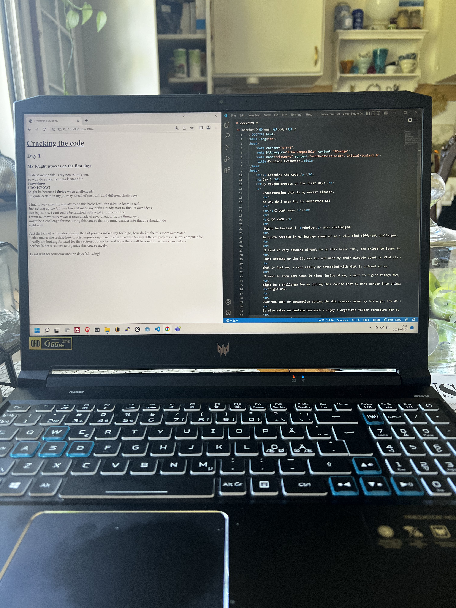
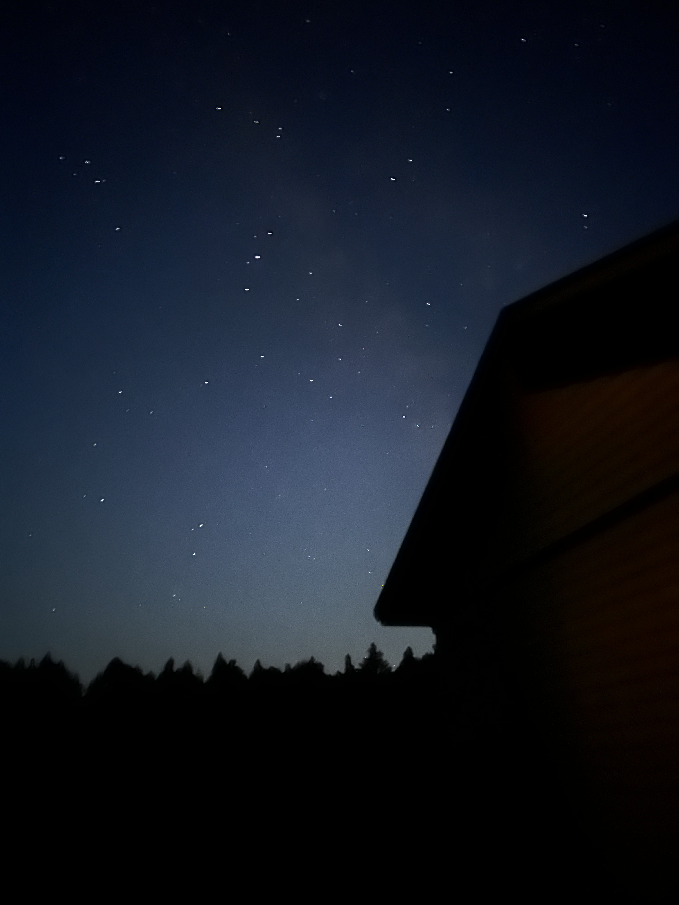
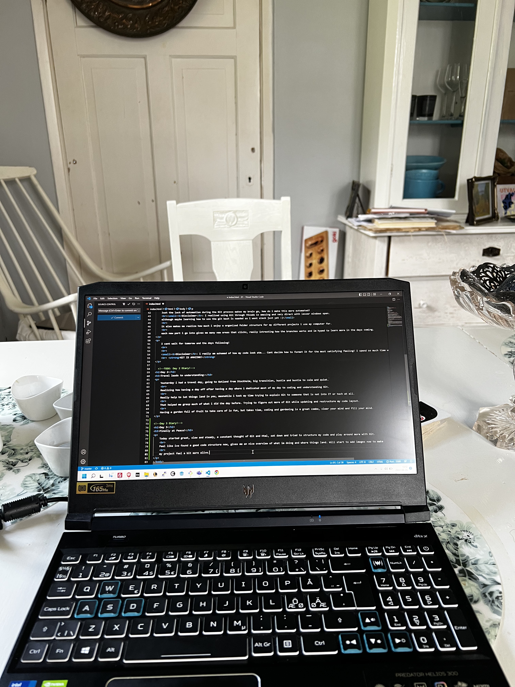
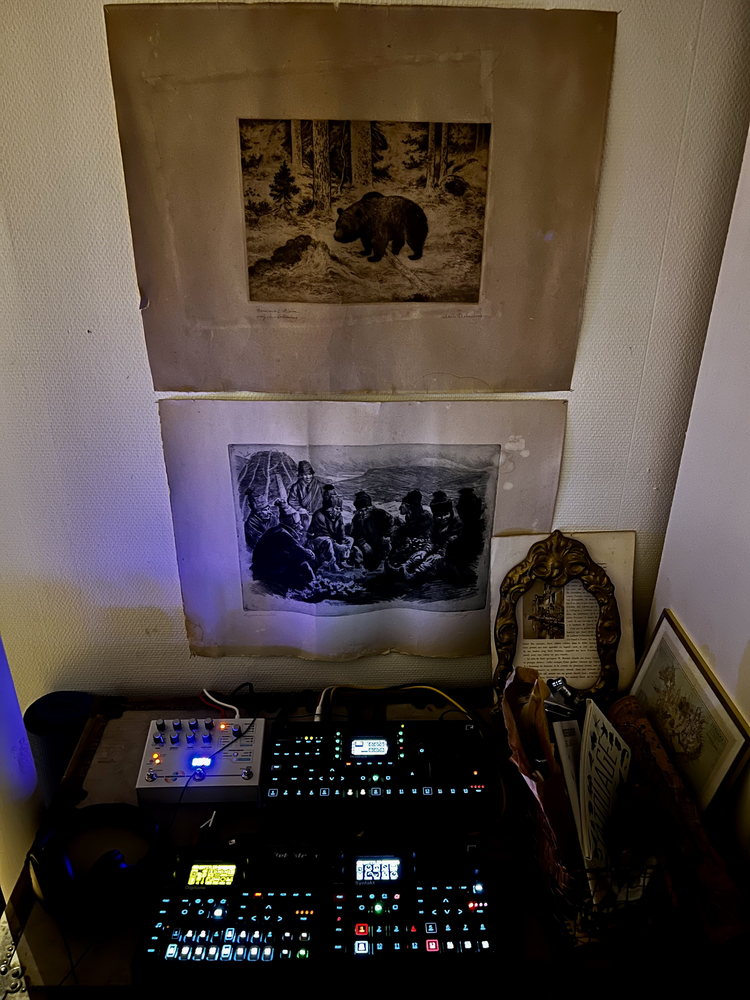

Understanding this is my newest mission.
so why do i even try to understand it?
I dont know
I DO KNOW!
Might be because i thrive when challenged?
Im quite certain in my journey ahead of me i will find different challenges.
I find it very amusing already to do this basic html, the thirst to learn is real.
Just setting up the Git was fun and made my brain already start to find its own ideas,
that is just me, i cant really be satisfied with what is infront of me.
I want to know more when it rises inside of me, i want to figure things out,
might be a challenge for me during this course that my mind wander into things i shouldnt do
right now.
Just the lack of automation during the Git process makes my brain go, how do i make this more automated?
Disclaimer: I realized using Git through VScode is amazing and very direct with lesser windows open.
although maybe learning how to use the git bash is needed so i wont slack just yet :)
it also makes me realize how much i enjoy a organized folder structure for my different projects i use my computer for.
each new part i go into gives me many new areas that clicks, really intresting how the branches works and im hyped to learn more in the days coming.
I cant wait for tomorow and the days following!
Disclaimer: i really am ashamed of how my code look atm... Cant decide how to format it for the most satisfying feeling! I spend so much time with this small tasks :D
GIT IS AMAZING!
💗

Yesterday i had a travel day, going to Gotland from Stockholm, big transition, hustle and bustle to calm and quiet.
Realizing how having a day off after having a day where i dedicated most of my day to coding and understanding Git.
Really help to let things land in you, meanwhile i took my time trying to explain Git to someone that is not into IT or tech at all.
That helped me grasp much of what i did the day before. Trying to figure out more of Git while updating and restructure my code layout.
Having a garden full of fruit to take care of is fun, but takes time, coding and gardening is a great combo, clear your mind and fill your mind.
💗

Today started great, slow and steady, a constant thought of Git and Html, sat down and tried to structure my code and play around more with Git.
Feel like ive found a good code structure now, gives me an nice overview of what im doing and where things land. Will start to add images now to make
my project feel a bit more alive. Going deep down the HTML rabbithole, i want to learn CSS and style stuff up now, please set me free!
💗

Today i had an inital idea to relax from coding, although i couldnt let it go really just yet. I spend this day
mainly searching more information about Git and VSCode found a few good videos showing off the power of VSCode which
made me realize what a powerful tool it is during this process and the faster i learn to work with it, the smoother
my whole experince will be. Spent friday night setting up my music setup in the house to play with it today!
This is the soul of my gear collection, that i started a while ago, it has changed many times, thank god for an amazing second hand market!
💗

Finally a day in the sun, no computer screen for the whole day! Trying to not think about HTML or Git...
I´ll be honest, it was hard, my mind keep going there, its a challenge its something i want to learn!
But at the sametime i had so much else to do, the storm was coming, i had to get the apples!
💗